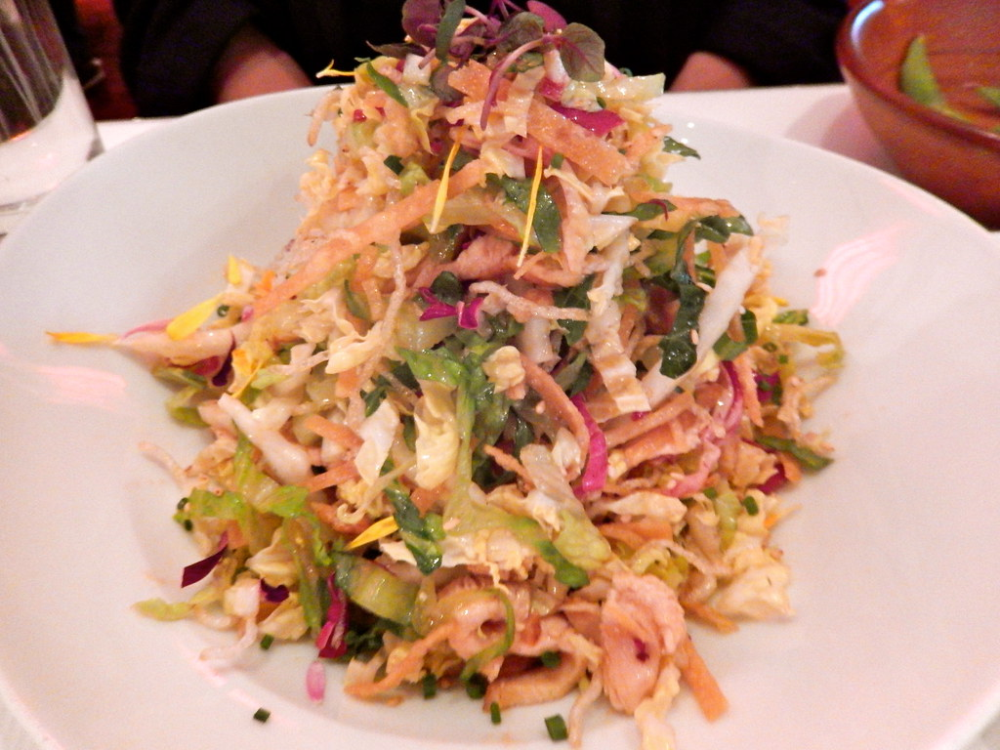

Home
Crispy Shredded Chicken

Crispy Shredded Chicken Recipe
This recipe will help you to create a succulant crispy shredded chicken meal. Make sure to follow all of the steps carefully and ensure you buy the correct ignredients to make this the best tasting meal possible!
Ingredients
- Chicken
- Soy sauce
- Red pepper
- Vegetbale oil
- Green pepper
- Cornflour
- Chilli sauce
- Garlic and ginger paste
- Sesame oil
- Spring onions
Steps
- Slice the chicken into strips
- Meanwhile, add oil to the wok and cook peppers for 3-4 minutes
- Spread cornflour in a shallow bowl. Season, then add marinate chicken
- Fill wok with oil to about 0.5cm deep, then heat to medium/high
- Carefully add chicken cooking for 3-4 mins
- Mix together the remaiing soy, sweet chilli, garlic past and sesame oil in a large bowl. Add everything togetehr and you're done!